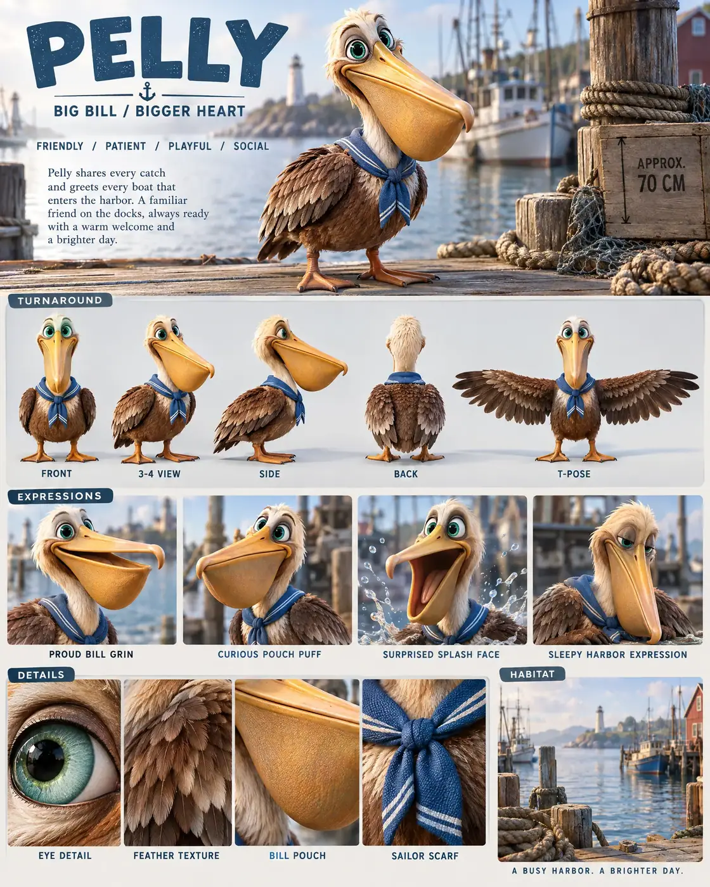

#86 of 100
Pelly
Brown pelican
Birds & SkyBIG BILLBIGGER HEART
- Species
- Brown pelican
- Collection
- Birds & Sky
- Height
- 70 CM
- Personality
- FRIENDLYPATIENTPLAYFULSOCIAL
- Colour palette
- WARM BROWN FEATHERSCREAM HEADGOLDEN BILLSEA-GREEN EYESSAILOR BLUE
- Expressions
- proud bill grin
- curious pouch puff
- surprised splash face
- sleepy harbor expression
- Detail panels
- EYE DETAIL
- FEATHER TEXTURE
- BILL POUCH
- SAILOR SCARF
- Character note
- Pelly sharing every catch and greeting every boat that enters the harbor
Reference sheet prompt
Cute brown pelican named PELLY, with oversized sea-green eyes, warm brown feathers, a cream head, a huge golden bill with a soft pouch, webbed feet, and a blue sailor scarf. A friendly harbor fisher high-end 3D animated feature reference sheet, portrait 4:5 board, original character, header “PELLY” with tagline “BIG BILL / BIGGER HEART,” traits “FRIENDLY / PATIENT / PLAYFUL / SOCIAL” full-body turnaround — front / 3-4 / side / back / T-pose, bill pouch, feather pattern, feet, scarf, wings, and proportions consistent, labels beneath each pose row of 4 expressions: proud bill grin, curious pouch puff, surprised splash face, sleepy harbor expression palette swatches WARM BROWN FEATHERS, CREAM HEAD, GOLDEN BILL, SEA-GREEN EYES, SAILOR BLUE coastal harbor habitat accents with docks, calm water, ropes, distant boats, and sea haze in the information band, approximate height “APPROX. 70 CM,” bio about Pelly sharing every catch and greeting every boat that enters the harbor bottom macro panels labeled EYE DETAIL, FEATHER TEXTURE, BILL POUCH, SAILOR SCARF 8k render, detailed bill material, no extra pelicans, no logos